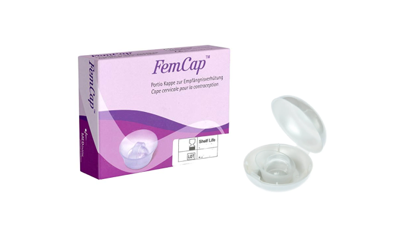
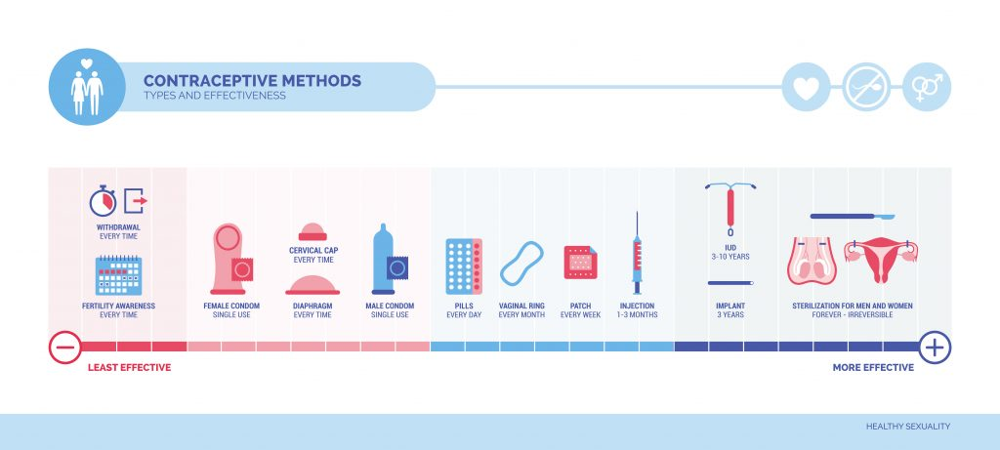
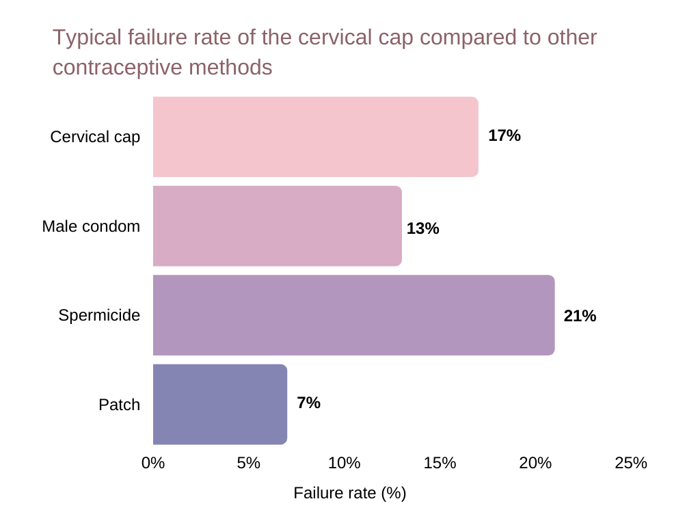
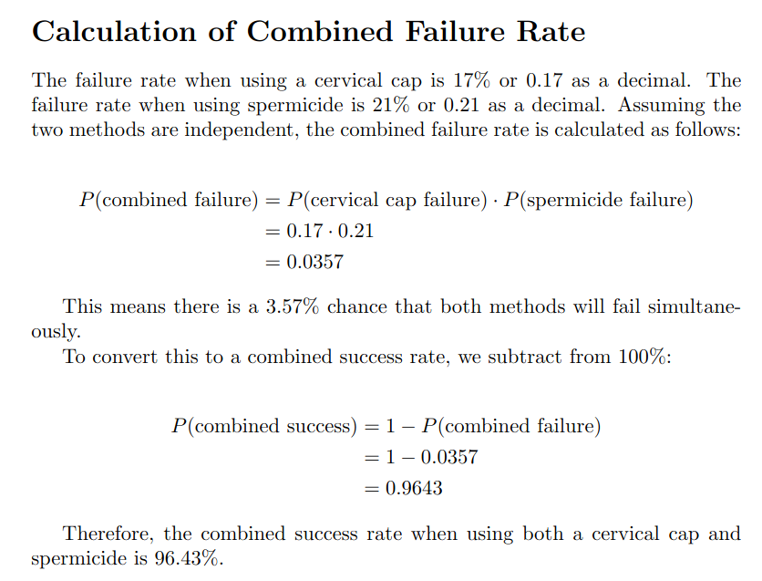
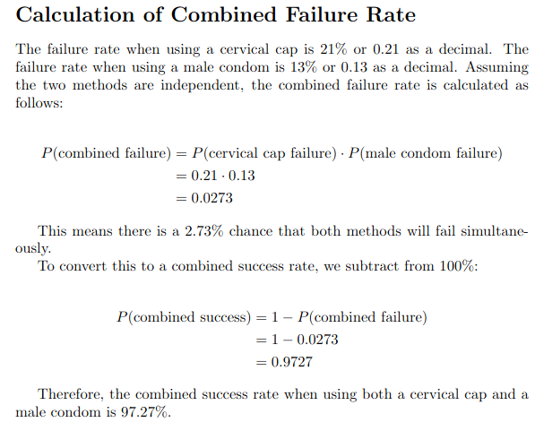
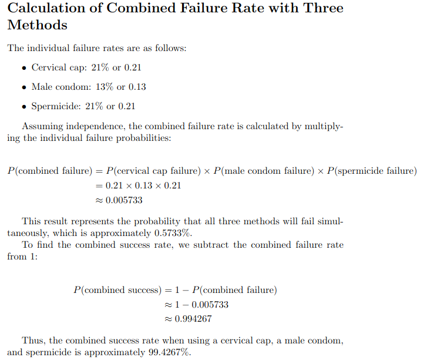

Βασικές πληροφορίες για το αυχενικό καπάκι
Το αυχενικό καπάκι είναι ένα μικρό κύπελλο κατασκευασμένο από μαλακή σιλικόνη και έχει σχήμα καπέλου ναυτικού. |
 |
||
|
Οδηγίες Χρήσης
Συχνές Ερωτήσεις
|
Πλεονεκτήματα
|
Μειονεκτήματα
|

Το αυχενικό καπάκι έχει ποσοστό επιτυχίας 86% για τις γυναίκες που το χρησιμοποιούν σωστά και συνεπώς είναι μια αποτελεσματική μέθοδος αντισύλληψης. Το ποσοστό αυτό μειώνεται στο 71% για τις γυναίκες που δεν το χρησιμοποιούν σωστά. Το αυχενικό καπάκι δεν προστατεύει από τις σεξουαλικά μεταδιδόμενες ασθένειες, οπότε είναι σημαντικό να χρησιμοποιείται με προφυλάξεις.

Με τη χρήση απλών μαθηματικών μπορούμε να αποδείξουμε οτι όταν χρησιμοποιουνται πολλοι μέθοδοι αντισυλληψης ταυτόχρονα, η πιθανότητα ανεπιθύμητης εγκυμοσύνης μειώνεται δραστικά



Το αυχενικό καπάκι χρησιμοποιείται από πολλές γυναίκες σε όλο τον κόσμο. Παρ'ολα αυτά, δεν υπάρχουν ακριβώς το πόσες γυναίκες το χρησιμοποιούν στην Ελλάδα και στην Ευρώπη.